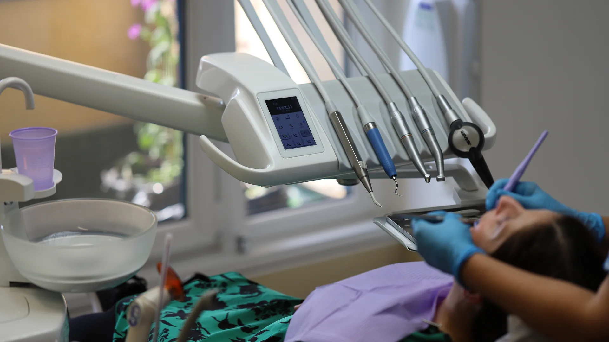
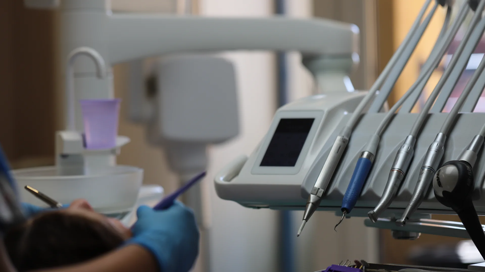
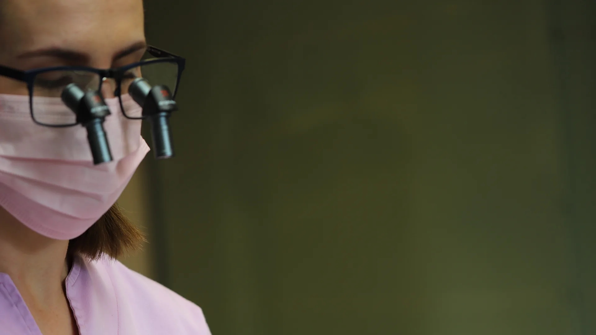
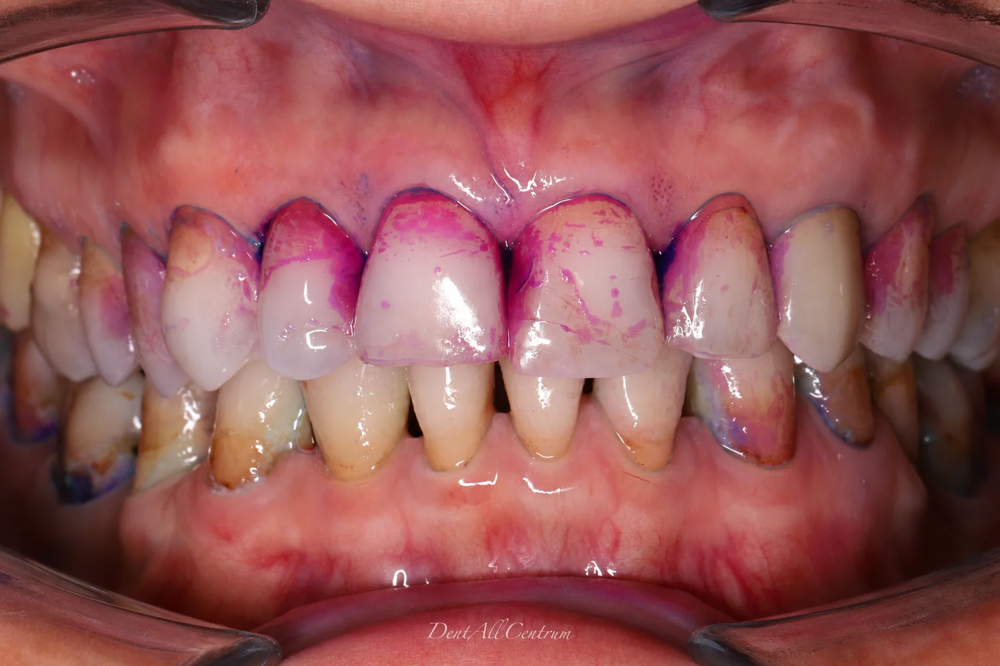
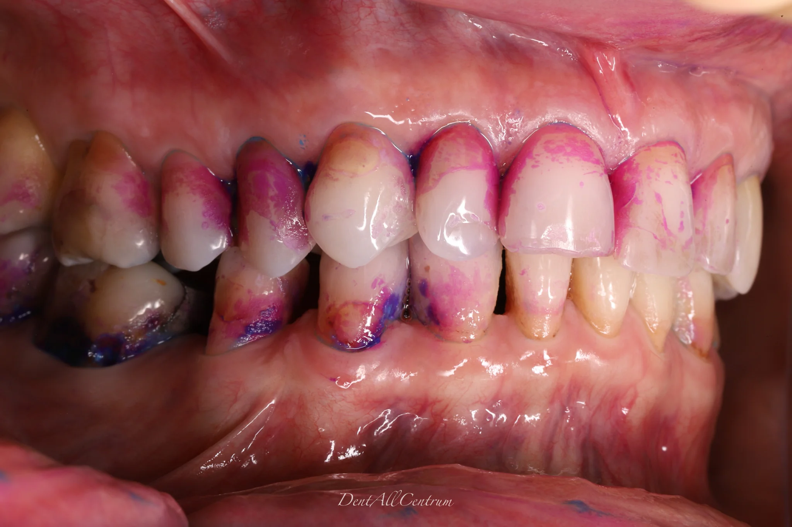
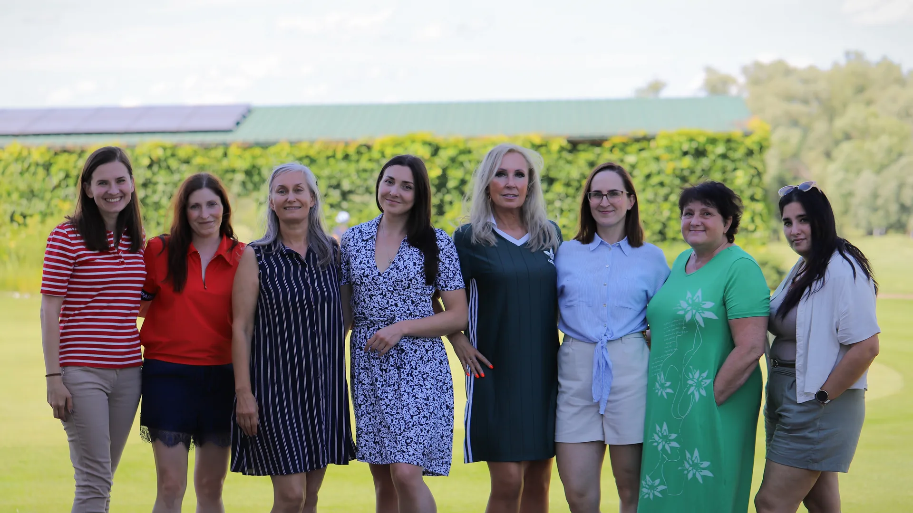
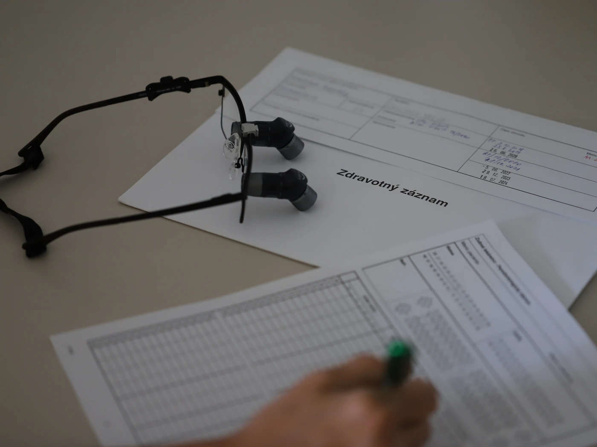
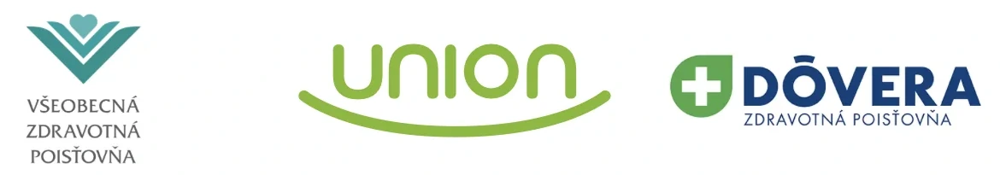
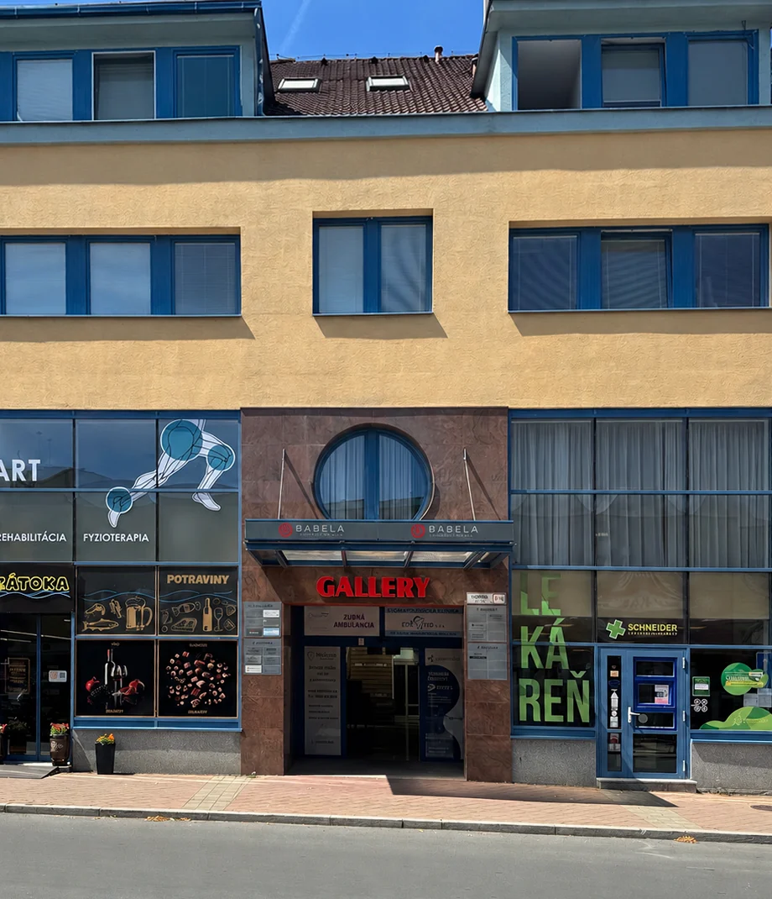

PRE VŠETKÝCH, KTORÍ MAJÚ ZÁUJEM O SVOJE ZDRAVIE Zubár v centre Banskej Bystrice s viac ako 20-ročnou tradíciou
Prijímame nových pacientov
O našom centre
Komplexná starostlivosť o váš chrup
Vidíme vás aj nás ako rovnocenných partnerov. Najdôležitejšia je pre nás kvalita, bezpečnosť a bezbolestnosť.
Každou návštevou budujeme vzťah založený na vzájomnej dôvere.

Moderné vybavenie
na špičkovej úrovni
Pracujeme s modernými technológiami, materiálmi a spolupracujeme s kvalitnými zubnými laboratóriami.
- 3D röntgen CBCT
- OPG
- Intraorálny skener
- 3D tlač
- Zväčšovacie lupy
Čo ponúkame
Naše služby
Prevencia
Preventívne prehliadky, pečatenie zubov, fluoridácia
Dentálna hygiena
Švajčiarsky protokol GBT, AIRFLOW®, nácvik čistenia, odstránenie zubného kameňa
Bielenie zubov
Domáce Opalescence, ambulantné bielenie lampou BlancONE
Záchovná stomatológia
Výplne zubov, estetické dostavby, ošetrenie koreňových kanálikov
Protetika
Zirkónové a keramické korunky aj z 3D tlače, mostíky, fazety, snímateľné protézy
Parodontológia
Prevencia a liečba parodontitídy, operačné zákroky na parodonte
Chirurgia
Extrakcie, gingivoplastika, frenulektómia, osteoplastika
RTG
OPG a 3D CBCT – diagnostika začínajúcich kazov a ochorení ústnej dutiny

Zdravý úsmev.
Lepší život.
Náš prístup
Ako prebieha vyšetrenie
Vstupné vyšetrenie
Vzájomnú spoluprácu začíname vstupným vyšetrením, ktoré trvá cca 45 minút. Pýtame sa na vaše subjektívne ťažkosti, následne akú máte vy predstavu o rozsahu budúcich prác. Urobíme kompletné klinické vyšetrenie, zhotovíme RTG snímky a fotodokumentáciu.
Plán liečby
Vysvetlíme si, aké sú možnosti ďalšej liečby, a dohodneme sa na postupe tak, aby vám vyhovoval časovo aj finančne.
Ošetrenie
Prvé je akútne ošetrenie, ak je nutné. Ďalšou prioritou je dentálna hygiena, ak je potrebné, aj viac sedení. Potom pokračujeme podľa dohodnutého plánu – výplne, extrakcie, protetika…
Prevencia
Po ukončení plánovaných ošetrení sa budeme vídať na preventívnych ročných prehliadkach a pravidelnej dentálnej hygiene, aby sme zabezpečili trvácnosť stavu.
Naša metóda
Dentálna hygiena
Bežné čistenie zubov kefkou nestačí — povlak ostáva v medzizubných priestoroch a pri ďasne, kde spôsobuje zubný kameň, zápal, zápach, krvácanie a kazy. Náš tím vás individuálne naučí správnu techniku čistenia podľa švajčiarskej metódy GBT, aby ste každý zub očistili z každej strany bez poškodenia ďasien a krčkov.
Toto je naša metóda na udržanie dlhodobého úsmevu bez bolesti, neustáleho vrtania a plombovania zubov. Týmto šetríme náš čas a vaše peniaze.
Súčasťou dentálnej hygieny je odstránenie zubného kameňa ultrazvukom, ručné dočistenie kyretou, polishing, prípadne pieskovanie technológiou AIRFLOW® – bezbolestne a šetrne.
Počet sedení je individuálny, zvyčajne 2–3. Následne sú recally, čiže kontroly, ako sa nám to darí udržovať.


po nesprávnom umytí zubov
Pre porovnanie
Šetríme čas aj peniaze.
Ceny podľa orientačného cenníka. Presná cena je stanovená po vstupnom vyšetrení.
Pre nových pacientov odporúčame 2–3 sedenia dentálnej hygieny.
Prevencia dnes, krajší úsmev zajtra

Náš tím
Ľudia, ktorým dôverujete
MUDr. Otília Kohajdová
Vedúca lekárka
Zakladateľka DentAll Centra s viac ako 30-ročnou praxou · Parodontológia
MDDr. Alexandra Diana Kišiková
Lekárka
Zameranie — endodoncia
MDDr. Ivana Polláková
Lekárka
Zameranie — záchovná stomatológia
Bc. Dominika Lisková
Dentálna hygienička
Janka Ľachká
Preventistka
Bc. Alena Brindzová
Vrchná sestra
Monika Messerschmidtová
Sestra
Mgr. Jana Žondová
Recepčná
Michaela Gašparová
Recepčná
Spokojní pacienti
Čo hovoria naši pacienti
4,8 z 530 recenzií na GoogleNavštevujem túto pani doktorku roky... pre mňa najlepšia zubná lekárka. TOP odbornosť, trpezlivosť a rešpekt k bolesti klienta. Dentálna hygiena skvelá doplňujúca vec 2x ročne. Po nej mám zuby v stave, aký som ešte nemal... Zo srdca odporúčam všetkým, ktorí si vážia seba, svoje zdravie a myslia na budúcnosť.
Na slovenské pomery neskutočne kvalitná ambulancia pani dok. Kohajdovej a profesionálna dentálna hygiena, ktorej vďačím za to, že už niekoľko rokov netrpím na zápaly ďasien, s ktorými som predtým roky bojoval. Veľká vďaka!
Som veľmi spokojný s úrovňou zubného centra. Milý personál, vysoká odborná úroveň. A špeciálne super dentálna hygiena, ktorá mi zachránila chrup pred poškodením.
Odporúčame vám pre deti.
Túto kliniku určite odporúčam, pani doktorka aj celý tím sú veľkí profesionáli s ľudským prístupom, cítila som sa po príchode aj počas ošetrenia veľmi príjemne, majú pekné priestory, moderné vybavenie a po ošetrení môžem potvrdiť že personál je plný odborníkov, ktorí si potrpia na kvalitu. Som veľmi spokojná 🙂
Pani doktorka je veľmi dobrá, milá, trpezlivá a má pekný, ľudský prístup. Ďakujem jej za zbavenie bolesti na zubnej pohotovosti, ktoré ma trápilo už od predchádzajúceho dňa.
K pani doktorke chodím už niekoľko rokov a už chodia aj moje deti na dentálnu hygienu. Nedokážeme si predstaviť ísť niekam inam. Deti sa tešia a tým je povedané všetko :-).
Citlivý prístup, profesionál vo svojom odbore. Odporúčam maximálne :)
Rýchle termíny, príjemný personál a moderná ambulancia. Presne to, čo som hľadal. Konečne zubár, kde sa cítim pohodlne a v bezpečí.
Som maximálne spokojná.
Toto zubné centrum ma príjemne prekvapilo. Mal som z návštevy trochu strach, no celý proces prebehol naozaj pokojne a bez bolesti. Zubár pristupoval opatrne a vždy sa uistil, že je všetko v poriadku. Môžem úprimne odporučiť každému, kto zubára zvyčajne odkladá práve pre strach.
Pani doktorka Kohajdová mi pred 8 rokmi zachránila chrup. Vysoko profesionálny prístup a nadštandardná práca. Chodíme k nej pravidelne celá rodina aj na dentálnu hygienu. Už pri vstupe sa na Vás usmeje milá pani recepčná — toto je štandard aj u pani sestričiek. Pani doktorka je základ toho príjemného prostredia. Cítim sa tam vždy príjemne.
Čisté, moderné prostredie a tím ktorý vám naozaj naslúcha. Pred každým zákrokom mi vysvetlili čo bude nasledovať. Takýchto lekárov je málo.

Financie
Ako je to s platením?
Na každú situáciu existuje viacero riešení, či bolestivý zub ideme zachraňovať výplňou, korunkou alebo koreňovými kanálikmi. Alebo zub extrahujeme a budeme zvažovať náhradu – mostík / implantát.
Od dohodnutého postupu sa odvíja cena prác a aj časový harmonogram tejto liečby.
Nie všetko je potrebné stihnúť za mesiac – dva, niekedy sa liečba naplánuje na dlhšie obdobie napríklad na rok alebo aj viac.
Financie
Orientačný cenník
Uvádzané ceny sú orientačné. Presná cena je stanovená po vstupnom vyšetrení.
Darčeková poukážka
Darujte zdravý úsmev
Platí na všetky služby počas 2 rokov. Kúpite ju na recepcii.
- 50 €
- 100 €
- 250 €
- 500 €

Sme zmluvní partneri všetkých zdravotných poisťovní – VšZP, Dôvera aj Union.
Otázky a odpovede
Časté otázky
Prijímate nových pacientov?
Áno, DentAll Centrum v Banskej Bystrici prijíma nových pacientov. Objednať sa môžete telefonicky na čísle 048 414 51 96. Spoluprácu začíname vstupným vyšetrením, ktoré trvá približne 45 minút – zhotovíme pri ňom RTG snímky a fotodokumentáciu a dohodneme sa na pláne liečby.
S ktorými zdravotnými poisťovňami máte zmluvu?
Sme zmluvní partneri všetkých zdravotných poisťovní – Všeobecnej zdravotnej poisťovne (VšZP), Dôvery aj Unionu.
Koľko stojí vstupné vyšetrenie a dentálna hygiena?
Vstupné vyšetrenie stojí 50 € + RTG snímky, dentálna hygiena 69 € a dentálna hygiena pre deti s farbením a nácvikom čistenia 48 €. Ďalšie ceny nájdete v orientačnom cenníku, presnú cenu liečby stanovíme po vstupnom vyšetrení.
Bolí ma zub. Čo mám robiť?
Zavolajte nám čo najskôr na 048 414 51 96 – akútne ošetrenie má u nás prednosť. Príčinu bolesti zistíme na RTG snímke a zub ošetríme výplňou alebo ošetrením koreňových kanálikov.
Kde vás nájdem a kde zaparkujem?
Sme v centre Banskej Bystrice na Hornej 61/A, v polyfunkčnom dome Gallery na 3. poschodí, oproti starému Prioru. Najbližšie parkovanie je v Parkovacom dome Centrum na Československej armády 24A, najbližšia zastávka MHD je Námestie slobody.
Aké máte ordinačné hodiny?
Pondelok až streda 7:30 – 15:30, štvrtok 7:30 – 16:00 a piatok 7:30 – 14:00.
Robíte dentálnu hygienu aj deťom?
Áno. Deťom zafarbíme zubný povlak a naučíme ich správne si čistiť zuby. Pozrite si, ako u nás prebieha dentálna hygiena podľa protokolu GBT.
Máte 3D röntgen CBCT?
Áno, OPG aj 3D CBCT snímku zhotovíme priamo v našom centre. CBCT zobrazí zuby, čeľustnú kosť a okolité štruktúry v troch rozmeroch a pomáha pri plánovaní implantátov, extrakcií a endodoncie.
Navštívte nás
Kontakt
- Adresa
- Horná 61/A, Banská BystricaPolyfunkčný dom Gallery, 3. poschodie, oproti starému PrioruZobraziť na mape
- Parkovanie
- Parkovací dom – Centrum Československej armády 24A, Banská Bystrica
- Telefón
- 048 414 51 96
- Ordinačné hodiny
- Pondelok – Streda7:30 – 15:30Štvrtok7:30 – 16:00Piatok7:30 – 14:00
